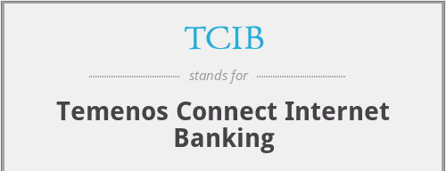

Senior Product Consultant
Syncordis
Luxembourg , November 2019 - June 2020
Temenos is a banking software company that provides digital and core banking solutions to financial institutions worldwide. Their products and services help banks and other financial institutions to operate efficiently, reduce costs, and improve customer experience. Some of their popular products include Temenos T24 Core Banking, Temenos Infinity, and Temenos Payments. The company was founded in 1993 and is headquartered in Geneva, Switzerland.
Temenos TCIB is a modular banking platform that provides financial institutions with a range of capabilities, including core banking, digital banking, data analytics, and loan/account origination. It helps banks streamline their operations, improve customer engagement, and drive business growth
Key Acheivments:
• Successfully translated business strategies into technical requirements and executed them in Temenos TCIB, resulting in a 25%
increase in advisory and DPM (discretionary portfolio management) client satisfaction.
• Implemented 10+ SQL jobs to load precomputed data for portfolios and related investments in Triple A Plus formats.